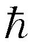
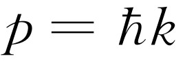
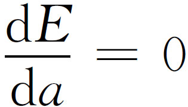

本章我们将讨论波动观点与粒子观点之间的关系。由上一章我们已经知道，波动观点和粒子观点都不正确。通常，我们总是力图准确地描述事物，至少也要做到足够地准确，以使我们的学习深入时无须改变这种描述——它可以扩充，但却不会改变！然而，当我们打算谈及波动图像或粒子图像时，两者都是近似的，并且都将发生变化。所以，从某种意义上来说，我们在这一章中所学习的东西并不是准确的；这里的论证是半直观的，我们将在以后使之更为准确，但是，当我们用量子力学作出正确解释时，有一些事情将会有一点改变。我们之所以要这样来处理，其原因当然在于我们不想立刻就深入到量子力学中去，而是希望对于我们将会碰到的几种效应至少能有某种概念。而且，我们所有的经验都与波动以及粒子有关，因此，在我们掌握对量子力学振幅的完整数学描述之前，先应用波动和粒子的概念来理解一定场合下所发生的事情是颇为方便的。我们在这样做时将力图阐明那些最薄弱的环节，但是其中大多数还是相当正确的——因为只是解释的问题。
首先，我们知道量子力学中描述世界的新方法——新的框架——是对每个可能发生的事件给予一个振幅，而且如果此事件涉及到接收一个粒子，那么就给出在不同位置与不同时间找到该粒子的振幅。于是，找到该粒子的概率就正比于振幅绝对值的平方。一般地讲，在不同场所与不同时刻找到粒子的振幅是随着位置和时间而变化的。
在一种特殊情况下，振幅在空间与时间上像ei（ ω t - k · r ） 那样呈正弦的变化（别忘了这些振幅是复数，而不是实数），它有一个确定的频率ω 和波数 k 。结果表明这对应于一种经典的极限情况，也就是说，我们可以认为在此情况中有一个粒子，它的能量E 为已知，并且E 与频率之间的关系是
而且粒子的动量 p 亦是已知的，它与波数 k 之间的关系是
p = k .（38.2）
这一情况说明粒子的概念受到了限制。我们这么经常使用的粒子的概念——它的位置、动量等等在某些方面已不再令人满意了。比如，假设在不同的位置上找到一个粒子的振幅是ei （ ω t -k · r ） ，则其绝对值的平方是常数，而这就意味着在所有的点上找到粒子的概率都相等。这就是说，我们不知道粒子究竟在何处 ——它可以在任何地方——粒子的位置是非常不准确的。
另一方面，如果一个粒子的位置知道得比较清楚，而且我们可以相当准确地预测它的话，那么在不同位置找到它的概率必定限制在一定的区域内，我们称其长度为Δx 。在此区域之外概率则为零。由于这个概率是某个振幅的绝对值的平方，如果绝对值的平方为零，则振幅亦为零，结果我们就有一个长度为Δx 的波列（图38-1），此波列的波长（波列中波节之间的距离）就对应于该粒子的动量。
这里我们遇到了有关波动的一件奇妙的事情——一件很简单的，与量子力学毫无关系的事情。任何人，即使完全不懂量子力学，只要他研究过波的话就会知道：对一个短的波列 ，我们不可能规定一个唯一的波长 。这样的波列没有 一个确定的波长；由于波列的长度是有限的，因此相应地在波数上存在着不确定性，于是在动量上也就存在着不确定性。
现在我们来考虑这种概念的两个例子——即看一下如果量子力学是正确的话，为什么在位置与（或）动量上会存在着不确定性的理由。在前面我们已经看到，如果事情不是这样——即如果有可能同时（精确）测定任何东西的位置与动量——我们就会遇到一个佯谬；幸而这样一种佯谬并不存在，由波动图像中可以自然地得出不确定性这一事实表明，一切都很协调。
这里有一个很容易理解的例子，表明位置与动量之间的关系。假设我们有一个单缝，一些具有一定能量的粒子从很远的地方飞来，也就是说它们全都大致水平地飞来（图38-2）。我们将集中注意动量的垂直分量。从经典的意义上说，所有这些粒子都具有一定的水平动量，比如说p 0 。所以，从经典意义上说，粒子穿过狭缝前的垂直动量p y 是确定知道的。图中粒子既不朝上，也不朝下运动，因为它来自很远的地方，当然这一来它的垂直动量就是零了。现在我们假设某个粒子通过宽度为B 的狭缝。当它从B 缝穿出后，我们就以一定的精确度，即±B ，得知它的垂直位置y 值。这就是说，在位置上的不确定量Δy 约为B 。现在我们也许想说，由于我们已知动量是绝对水平的，因而Δp y 是零；但这是错的。我们曾一度 知道动量是水平方向的，但除此之外就不知道什么了。在粒子穿过狭缝前，我们不知道它们的垂直位置。现在使粒子穿过狭缝，我们就发现它的垂直位置，但却失去了有关该粒子垂直动量的信息！为什么？按照波动理论，当波通过狭缝后，就像光那样会散开或衍射。因此，粒子跑出狭缝后，就有可能不笔直地飞行。由于衍射效应，粒子出射的图样散开，其张角（我们可将它定义为第一极小值的角度）就是对粒子出射的最后角度的不确定性的一种度量。
整个图样是怎样散开的呢？所谓散开就是说粒子有一定的往上或往下运动的可能性，也就是说，其动量具有向上或向下的分量。我们说可能性 与粒子 是因为可以用一个粒子计数器检测出这个衍射图样，而且当计数器（比如说在图38-2的C 处）接收到一个粒子时，接收的是整个 粒子，这样，从经典意义上来说，粒子要从狭缝射出往上偏至C 处，就得具有垂直的动量。
为了对动量的散布有一个大致的概念，我们设垂直动量p y 的散布等于p 0 Δθ ，这里p 0 是水平动量。那么在散开的图样中Δθ 有多大？我们知道第一极小值出现在Δθ 角上，这时，从狭缝的一边传出的波必须比从另一边传出的波多走过一个波长（在第30章中已得出过这个结论）。因此Δθ 为λ /B ，这样，此实验中的Δp y 就是p 0 λ /B 。注意：如果使B 变小，亦即对粒子的位置进行比较准确的测量，那么衍射图样就变宽。我们记得，在用微波做狭缝实验时，当我们将狭缝关小时，狭缝两侧强度的分布就变宽。所以，狭缝越窄，图样就越宽，而我们发现粒子具有侧向动量的可能性就越大。这样垂直动量的不确定量就与y的不确定量成反比。事实上，我们看到两者的乘积为p 0 λ 。但是λ 是波长，p 0 是动量，按照量子力学，波长乘动量就是普朗克常数h 。因此我们得到下列规则：垂直动量的不确定量与垂直位置上的不确定量的乘积约为h
Δy Δp y ≈h .（38.3）
我们不可能设计这样一个系统，在其中既知道粒子的垂直位置，又能以比式（38.3）所表示的更大确定性来预言它的垂直运动。这就是说垂直动量的不确定量必须超过h /Δy ，这里Δy 是我们的位置上的不确定量。
有时，人们说量子力学是完全错误的。当粒子从左边飞来时，它的垂直动量是零，现在它穿过了狭缝，它的位置也知道了。位置与动量两者似乎都能以任意高的准确度知道。不错，我们可以接收一个粒子，在接收时确定了它的位置如何，以及为了到达那里应具有多少动量。这些都完全正确，但这并不是不确定性关系式（38.3）所涉及的事，式（38.3）所说的是对一种状况的可预知性 ，而不是对于过去 的陈述。“我知道粒子穿过狭缝前的动量是多少，现在又知道它的位置”这种说法没有什么意思，因为我们现在已失去了关于动量的知识。粒子通过了狭缝这一事实已使我们不再能预言垂直动量。我们所谈的是一种预言性的理论，而不只是一种事后的测量。所以我们必须谈论能够预言的事。
现在我们从另一个角度来看一下。我们稍微定量地考虑同样现象的另一个例子。在前一个例子中，我们曾以经典方法测量了动量。那就是说：我们考虑了方向、速度和角度，等等，所以是用经典分析得出动量。然而，由于动量与波数有关，所以自然界中还有另一种测量粒子（光子或其他粒子）动量的方法，它没有经典的类比，因为它利用的是式（38.2）。那就是测量波的波长 。我们试用这种方式来测量动量。
假设有一个刻有许多线条的光栅（图38-3），并且有一束粒子射向此光栅。我们已屡次讨论过这样一个问题：如果粒子具有确定的动量，那么，由于干涉效应，我们会在某个方向上得到一个十分尖锐的图样。我们也谈过在测量这个动量时可以精确到什么程度，也就是说，这样的光栅分辨率有多大。我们不拟再作一次推导，而只是参考第30章的结果，在那里已经得出用一个给定的光栅能够测出的波长的相对不确定量为1/（Nm ），其中N 是光栅线条数，m 是衍射图样的级数，亦即
现在式（38.4）可以重新写为
这里L 是图38-3中所示的距离。这段距离是粒子或者波或者其他某种东西从光栅底端反射后必须跑过的总路程与它们从光栅顶端反射后必须跑过的总路程之差。这就是说，形成衍射图样的波为来自光栅不同部分的波。首先到达的波来自光栅的底端和波列的始端，而其余到达的波则来自波列的后面各部分和光栅的另外部分，最后一个波最末到达，它包括了波列中与最前端相距为L 的一点。所以为了使在我们的光谱中能有一条与一定的动量对应的锐线［其不确定量由式（38.4）给出］，我们必须有一列长度至少为L 的波列。如果波列太短，我们就没有用到整个光栅。形成光谱的波只是从光栅中很短的部分反射的波，光栅的作用没有很好发挥——我们将得到一个很大的角展度。为了得到较窄的角展度，我们必须利用整个光栅，这样至少在某些时刻整个波列应同时从光栅的各部分散射出来。因此为了使波长的不确定量小于式（38.5）所给出的值，波列的长度必须为L 。顺便说一下
因此
这里L 是波列的长度。
这意味着，如果有一长度小于L 的波列，那么在波数上的不确定量必然超过2π /L 。或者说波数的不确定量乘以波列的长度——暂时我们称之为Δx ——将大于2π 。我们之所以称波列长度为Δx 是因为这是粒子在位置上的不确定量。如果波列只存在于有限长度之中，那么，这就是我们能找到粒子的区域在不确定量Δx 范围以内。波的这种性质，即波列的长度乘以相应波数的不确定量至少为2π 这一点，是每个研究波的人都知道的，这与量子力学毫无关系。这只是说，如果我们有一长度有限的波列的话，没有办法很精确地数出波的数目。我们试从另一途径来看看其中的理由。
假定我们有一长为L 的有限波列；那么，由于它在两端必定减少（如图38-1所示），所以在长度L 中波的数目是不确定的，其不确定量约为±1。但在长度L 中的波数是kL /（2π ）。可见k 是不确定的，我们又重新得出式（38.7）的结果，它只是波的一种特性。无论波是在空间传播，k 是每厘米的弧度数，L 是波列的长度，还是波在时间上展开，ω 是每秒的振动数，T 是波列持续的时间“长度”，都会出现同样的情况。这就是说：如果只是持续一定的有限时间T 的波列，那么频率的不确定量就由下式确定
Δω =2π /T .（38.8）
我们已经着重指出，这些都只是波的性质，例如，在声学理论中就已为人们所熟知了。
要点在于，在量子力学中，我们将波数解释为对粒子动量的一种量度，即 ，这样，式（38.7）就告诉我们Δp ≈h /Δx 。因此，这就表明了经典动量概念的适用界限（显然，如果我们想用波来表示粒子的话，动量的概念必定受到某种限制）。我们发现了一条规则，使我们对于经典概念在何时失效具有一些认识，这的确很好。
下面，我们考虑粒子波在晶体上的反射。晶体是一块厚厚的东西，它全部由排列得很好的相同原子组成（我们将在后面包括一些较复杂的情况）。问题是对于一束给定的光（X射线）、电子、中子等等，怎样布置原子的排列才能在某个给定方向上得到强的反射极大值。为了得到强的反射，来自所有原子的散射都必须是同相位的。同相波的数量和反相波的数量不能相等，不然波会相互抵消掉。正如我们已经说明过的那样，解决这个问题的方法是找出等相位的区域；它们就是一些对入射方向和反射方向成相等角度的平面（图38-4）。
考虑图38-4中两个平行平面，从这两个平面散射的波，假若其波前所经过的距离的差为波长的整数倍，则散射波的相位相同。可以看出，距离差为2d sin θ ，这里d 是两平面间的垂直距离。于是相干反射的条件是
2d sin θ =nλ （n =1，2，…）.（38.9）
比方说，如果晶体中原子刚巧分布在遵从式（38.9）（其中n =1）的平面上，那么就会出现强反射。然而，如果有性质相同（密度相同）的其他原子位于原来各对平面的中间，那么这些中间平面的散射也同样强烈，并将与其他的散射相干，致使总效果为零。所以式（38.9）中的d 必须指相邻 平面的距离；我们不能取两个相距五层的平面再应用这个公式！
有趣的是，实际的晶体通常并不那么简单，即好像只是以一定方式重复排列的同一类原子。换句话说，假如我们作一个二维类比的话，它们很像印满了某种重复图案的糊墙纸。对原子来说，所谓“图案”就是指可能包含有相当大量原子的某种排列，例如，CaCO3 的图案包含有一个Ca原子、一个C原子和三个O原子等等。但不管是什么，这些图案都按一定的形式重复。这种基本图案就称为晶胞 。
重复的基本形式决定了我们所称的点阵类型 ；只要观察反射波和找出它们的对称性，就能立即确定点阵类型。换句话说，只要最终 发现有任何反射，就可确定点阵类型，但是为了确定晶格的每个组元的组成，就必须考虑各个方向上的散射强度 。向哪 个方向散射取决于点阵的类型，但各个散射的强度 则由每个晶胞内有些什么来决定。晶体的结构就是用这种方式得出的。
图38-5和图38-6是两幅X射线衍射图样的照片；它们分别表明岩盐与肌红蛋白的散射。
图38-5
图38-6
附带提一下，如果最靠近的两个平面间的距离小于λ /2，就会发生一件有趣的事。在这种情况下，式（38.9）对n 就没有解。因此，如果λ 大于相邻平面之间距离的两倍，就没有两侧衍射图样，光——或者别的什么——将直接穿过材料，而不反射也无损耗。所以，在可见光的情况下，λ 远大于间隔，当然光就直接通过，而不会出现从晶面反射的图样。
这个事实在产生中子的核反应堆情况下也引起了有趣的结果（中子显然是粒子，谁都会这么说）。假如我们引出这些中子使它们进入一根长石墨棒，它们就会扩散，并且缓慢地穿过石墨棒（图38-7）。它们之所以扩散是因为被原子弹开，但严格地说，按照波动理论，它们之所以被原子弹开是由于晶面的衍射。结果表明，假如我们取一根长石墨棒的话，从远端跑出的中子都具有长的波长！事实上，假如我们把中子强度作为波长的函数作图的话，只有在波长大于某个极小值时才出现曲线（图38-8）。换句话说，我们可以用这种方法得到极慢的中子，只有最慢的中子才会通过；它们没有被石墨棒的晶面所衍射或散射，而是像光线通过玻璃一样径直穿过石墨棒，没有向两边散射出去。还有许多其他证据也说明中子波和别的粒子波是真实的。
图38-7 反应堆中子通过石墨块的扩散
图38-8 从石墨棒出来的中子强度与波长的关系
现在我们来看一下由式（38.3）所表示的不确定性关系的另一个应用。在这里不用过分认真；概念是正确的，但所作的分析并不很精确。这个概念涉及到确定原子的大小，以及按经典说法，电子将不断辐射出光，因而一直作螺旋运动，直至最后落到原子核上这一事实。但是这种说法不符合量子力学的观点，因为那样一来我们就同时知道每一个电子的所在以及它运动得有多快。
假定我们有一个氢原子，现在要测量电子的位置；我们肯定不能精确地预言电子的位置，不然动量的扩展将会达到无限大。每当我们观察电子时，它是在某处，但是它在各个不同地方都有一定的振幅，因而在那些地方都可能找到它。这些位置不可能全都在原子核处，我们将假定位置有一定的扩展，其大小约为a 。这就是说，电子离原子核的距离通常约为a 。我们将由原子的总能量取极小值这个条件来确定a 的数值。
由于不确定性关系，动量的扩展约为h /a ，这样，如果我们打算用某种方式去测量电子的动量，比如使它散射X射线，然后寻找运动散射体的多普勒效应，那么可以预期并不会每次都得到零——电子并不是静止不动的——但它的动量一定约为p ≈h /a ，于是动能约为mv 2 /2=p 2 /（2m ）=h 2 /（2ma 2 ）（在某种意义上，这是一种量纲分析，用以找出动能是以何种方式取决于普朗克常数，质量m ，以及原子的大小a 。我们无需顾虑答案中2、π 等这类因子上的出入，事实上，我们甚至还没有很精确地定义过a ）。现在，势能为-e 2 除以离原子中心的距离，即-e 2 /a ，这里的e 2 大家记得就是电子电荷的平方除以4π ε 0 。要点就在于，如果a 变小，势能就变小，但a 越小，由于不确定性关系，所需的动量也就越大，因而动能也越大。总能量是
我们不知道a 究竟为多大，但我们却知道原子本身会进行安排，以取得某种折衷办法使能量尽可能地小。为使E 保持极小，我们求E 对a 的微商，令此微商等于零后再解出a 。E 的微商是
令 ，求得a 值为
这一个特殊的距离称为波尔半径 。我们因此得知原子的大小约为埃的数量级，这个结论是正确的：这是一件挺不错的事——实际上，这是一件令人惊奇的事，因为在这以前，我们还没有推断原子大小的根据！从经典的观点来看，由于电子会螺旋式地落到原子核上，原子完全不可能存在。
现在，如果将（38.12）的a 0 值代入（38.10）去求能量，结果得出
能量为负意味着什么？这意味着，当电子在原子中时的能量比自由状态下的能量小。这就是说，它是受束缚的。也就是说，要把电子“踢出去”需要能量；要电离一个氢原子大约需要13.6 eV的能量。我们没有理由认为所需的能量不是这个值的2倍、3倍或1/2倍、1/π 倍，因为我们这里所用的是十分粗略的论证。然而，我们在这里悄悄地这样来使用所有的常数，使得正好得出正确的数字！13.6 eV这个数字称为一个里德伯（Rydberg）能量；它是氢原子的电离能。
所以，我们现在懂得了为什么不会掉到地板下面去。当我们行走时，鞋子中的大量原子推斥着地板中的大量原子。为了把原子挤得更靠近一些，电子必须被限制在一个较小的空间，由不确定性关系，平均而言它们的动量将变得大些，这就意味着能量变大；抵抗原子压缩的是一种量子力学效应，而不是经典效应。按照经典的观点，如果使所有电子与质子更为靠近，我们应预期能量会进一步降低，因此，在经典物理学中，正电荷与负电荷的最佳排列就是互相紧靠在一起。这些在经典物理学中是很清楚的，但是由于原子的存在又令人困惑。当然，早先的科学家发明过一些办法来摆脱这个困境——不过别去管它，我们现在找到了一种正确 的方法（也许如此）。
顺便提一下（虽然眼下我们还不具备理解它的基础），在有许多电子的场合中，这些电子总是试图彼此离开。如果某个电子正占据着某一空间，那么另一个电子就不会占据同一空间。说得更精确一些，由于存在着两种自旋的情况，因此两个电子有可能紧靠在一起，一个电子沿一个方向自旋，而另一个电子则沿反方向自旋。但此后我们在该处再也不能放进更多的电子。我们必须把其他电子放到别的位置上，这就是物质具有强度的真正原因。假如我们有可能将所有电子放在同一个地方，那么它们将会比现在更为凝聚。正是由于电子不可能全都紧靠在一起这个事实，才使得桌子和其他种种东西变得坚固。
十分明显，为了理解物质的性质，我们必须用量子力学，经典力学在这方面是不会令人满意的。
我们已讲过处在可能具有的最低能量状态下的原子，但是结果表明电子可以具有别种状态，它能以更有力的方式旋转与振动，因此原子可以有多种不同的运动。按照量子力学，在稳定状态下，原子只可能有确定的能量。我们作了一个图（图38-9），其中垂直方向标绘能量，每一个允许的能量值画一条水平线。当电子是自由电子，即它的能量为正时，它可以具有任何值，并能以任何速率运动。但是束缚能不能取任意值。原子必须取如图38-9所示的一组允许值中的某一个能量。
现在我们称这些能量的允许值为E 0 ，E 1 ，E 2 ，E 3 。如果原子本来处于E 1 ，E 2 等 “激发态”之一时，它不会永远保持这种状态。迟早它会掉到较低的状态中去，并以光的形式辐射出能量。发射出的光的频率可由能量守恒关系加上量子力学的一个关系式［即光的频率与光的能量之间的关系式（38.1）］来确定。因此，比如说从能量E 3 到能量E 1 的跃迁所释放的光的频率即为
于是，这就是原子的一个特征频率，它确定了一条发射谱线。另一种可能跃迁是从E 3 至E 0 ，这时就有一个不同的频率
另一个可能性是，如果原子已被激发到E 1 态，它可能掉回到基态E 0 ，而发射出的光子的频率是
我们举出三种跃迁的情况是为了指出一个有趣的关系。由式（38.14），（38.15）和（38.16）很容易看出
ω 30 =ω 31 +ω 10 .（38.17）
一般来说，如果我们找到了两条谱线，可以预期在频率之和（或之差）处将找到另一条谱线，而且通过找到这样一系列能级，使每条谱线对应于其中的某一对能级的能量差，那么所有的谱线就能得到理解。在量子力学出现以前人们就已注意到这种在谱线频率上出乎意外的巧合，它称为里兹（Ritz）组合原则 。从经典的观点来看，这又是不可思议的。不过，我们别再唠叨经典力学在原子领域中的失败；看来我们已讲得够多的了。
前面已经谈到量子力学可以用振幅来阐述，振幅的行为很像波，它们具有一定的频率和波数。让我们看一下，从振幅的观点怎样会得出原子具有确定的能量状态。从我们至今所说过的那些事情出发是无法理解这一点的，但是我们都知道被限制的波具有确定的频率，例如，若声音限制在一个风琴管或任何类似的东西中时，声波振动的方式就不止一种，但对每种方式都有一个确定的频率。这样，将波限制在其中的物体有某些确定的谐振频率。所以这是被限制在一定空间中的波的一个性质——这个课题我们将在以后详细地用公式来讨论——这些波只能具有一些确定的频率。由于振幅的频率与能量间存在着一般关系，我们发现束缚在原子内的电子具有确定的能量就不足为奇了。
我们简单地谈谈量子力学的某些哲学含义。通常问题总是有两个方面：一个是对于物理学的哲学含义，另一个是把哲学上的问题外推到其他领域。在把跟科学相联系的哲学观念引伸到别的领域中去时，它们往往完全被歪曲了。因此我们将尽可能把自己的评论局限于物理学本身。
首先，最有趣的是不确定性原理的概念；进行观察会影响现象。人们向来都知道进行观察要影响现象，但是要点在于，这种影响不可能依靠重新调整仪器而被忽略、减到最小或任意减小。当我们观察一定的现象时，不可避免地会以某一最低限度的方式来扰动它，这种扰动是物理观点的一致性所必需的 。在量子力学以前的物理学中，观察者有时也是重要的，但这只是从无关紧要的意义上来说。曾经有人提出过这样的一个问题：如果有一棵树在森林中倒了下来，而旁边没有人听到，那它会发出响声吗？在一片真实 的森林中倒下的一棵真实 的树当然会发出声音，即使没有任何人在那里。但即使没有人在那里听到，它也会留下其他的迹象。响声会震动一些树叶，如果我们相当仔细的话，可以发现在某个地方有一些荆棘将树叶擦伤，在树叶上留下微小的划痕，除非我们假定树叶曾经发生振动，否则对此划痕就无法解释。所以，在某种意义上我们必须承认这棵树确实发出过声音。我们也许会问：是否有过对声音的感觉 呢？不像有过，感觉大约总与意识有关。蚂蚁是否有意识以及森林中是否有蚂蚁，或者树木是否有意识，这一切我们都不知道。对这个问题我们就谈到这里吧！
量子力学出现以来人们所强调的另一件事情是这样一个观念：我们不应当谈论那些我们不能够测量的事情（实际上相对论也这么说过）。除非一件事情能通过测量来定义，否则它在理论上就没有地位。由于一个定域粒子的动量的精确值不能通过测量来确定，因此它在量子理论上就没有地位。但是，认为经典理论的问题就出在这里是错误 的。这是一种对情况所作的粗枝大叶的分析。因为我们不能精确地测量 位置和动量并不先验地 意味着我们不能 谈论它们，而只是意味着我们不必 谈论它们。在科学中情况是这样的：一个无法测量或无法直接与实验相联系的概念或观念可以是有用的，也可以是无用的。它们不必存在于理论之中。换句话说，假如我们比较物理世界的经典理论与量子理论，并假设实验上确实只能粗略地测出位置与动量，那么问题就是一个粒子的精确位置与它的精确动量的概念 是否仍然有效。经典理论承认这些概念；量子理论则不承认。这件事本身并不意味着经典物理是错误的。当新的量子力学刚建立时，经典物理学家——除去海森伯、薛定谔和玻恩以外所有的人——说：“看吧，你们的理论一点也不好，因为你们不能回答这样一些问题：粒子的精确位置是什么？它穿过的是哪一个孔？以及一些别的问题”。海森伯的答复是：“我不用回答这样的问题，因为你们不能从实验上提出这个问题。”这就是说，我们不必 回答这种问题。考虑下述两种理论（a）与（b）；（a）包括一个不能直接检验但在分析中要用到的概念，而（b）则不包括这个概念。如果它们的预测不一致，我们不能声称：由于（b）不能解释（a）中的那个概念，因而它就是错的，因为这个概念是一个无法直接检验的东西。知道哪些观念不能直接检验总是好的，但是没有必要将它们完全去掉。认为我们只利用那些直接受到实验制约的概念就能完全从事科学工作的这种看法是不正确的。
量子力学本身就存在着波函数振幅、势，以及其他许多不能直接测量的概念。一门科学的基础是它的预测 能力。预测就是说出在一个从未做过的实验中会发生什么。怎么能做到这一点呢？所用的方法是假定那里会发生什么事情，而不依赖于实验。我们必须把各种实验结果外推到它们尚未做过的那个领域，同时必须引用我们的概念，并把它们引申到还未得到检验的那些地方。如果我们不这样做，就谈不上预测。所以，对于经典物理学家来说，欣然赞同，并且认为位置——它对棒球来说有着明显含义——对于电子也具有某种含义，将是非常明智的。这并不是什么笨拙，而是合情合理的步骤。今天我们说相对论应该对所有的能量都是正确的，但是或许有一天，有人会跑来说我们是多么笨呀！直到“惹出祸来”，我们实在是不知道笨在哪里的，所以整个思想就是惹点祸出来。唯一能发现我们错误的方法是找出我们的预测是什么 。这对于建立起一种概念是绝对必要的。
我们已对量子力学的不确定性作过一些评论。那就是我们现在还不能预测在给定的、尽可能仔细安排的物理条件下会发生什么物理事件。假如有一个原子处于受激态，即将发射光子，那么我们无法说出它将在什么时候 发射光子。它在任何时刻都有发射光子的一定振幅，我们可以预测的只是发射的概率；我们不能精确地预测未来。这件事引起了种种胡扯和关于诸如意志自由的含义的问题，还引起了世界是不确定的种种想法。
当然，我们必须强调，在某种意义上经典物理也是不确定的。人们通常认为这种不确定性——我们不能预言未来——是一种重要的量子力学的特色，而且据说这可用来解释心理的行为，自由意志的感觉等等。但是如果世界真是 经典世界——如果力学定律是 经典的——心理上也不见得会多少有些不同的感受。确实，就经典观念而言，如果我们知道了世界上（或者在一个气体容器中）的每个原子的位置与速度，那么就应当能精确地预言会发生什么。因此经典的世界是决定论的。然而，假定我们的精确度有限，而且的确不知道一个原子的确切 位置，比如说只精确到十亿分之一，那么这个原子运动时会撞在别的原子上，由于我们所知道的位置的精确度不超过十亿分之一，因此我们发现在碰撞后，位置的误差还会更大。当然，在下一次碰撞时，误差又将被放大，这样，如果起先只有一点点误差的话，后来就会迅速放大而出现很大的不确定性。举个例子来说：比如一道水流从堤坝上泻下时，会飞溅开来。如果我们站得很近，常常会有一些水滴溅到我们的鼻子上。这一切看来完全是无规则的，然而这样一种行为能由纯粹的经典定律来预言。所有水滴的精确位置取决于水流流过坝以前的精确运动。结果怎样呢？在水流落下时，极微小的不规则性都被放大了，结果就出现了完全的不规则性。很明显，除非我们绝对精确 地知道水流的运动，否则就不能真正预知水滴的位置。
说得更明确一些，给定任一精确度，无论它精确到怎样的程度，我们都能找到一个足够长的时间，以致无法对这么长的时间作出有效的预言。其实要点在于这段时间并不太长。如果精确度为十亿分之一，这个时间并不是数百万年。事实上，这个时间随着误差呈对数式地增长，结果发现只在非常、非常短的时间里我们就失去了所有的信息。如果精确度提高到十亿乘十亿再乘十亿分之一——那么不管我们说多少个几十亿，只要最后不再说下去——我们就能找到一个比刚才提到的精确度的数字还要短的时间——过此时间后就再也不能预言会发生什么了！因此，诸如以下的说法，什么由于人类思维的明显的自由与非决定性，我们应当认识到再也不能希望用经典的“决定论的”物理来理解它；什么欢迎量子力学将我们从“绝对机械论的”宇宙下拯救出来啊，等等都是不公正的，因为从实际的观点来说，在经典力学中早已存在着不可确定性了。